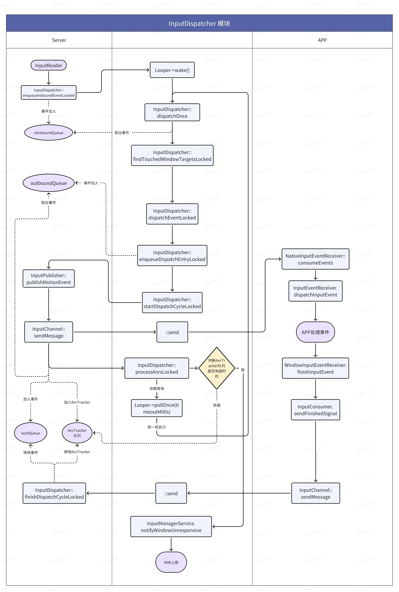

Android Input 系统概述
预备知识
首先介绍一下和 Input 系统相关的一些知识，他们属于硬件以及 Linux 底层的一些知识，不属于本文的介绍重点。
- 输入设备：常见的输入设备有鼠标、键盘、触摸屏等，用户通过输入设备与系统进行交互。
- UEVENT机制：Linux 系统中的一种事件通知机制，用于向用户空间发送有关内核和设备状态变化的通知。这种机制通常用于设备驱动程序、热插拔事件以及设备状态变化等场景，以便用户空间应用程序能够在这些事件发生时做出相应的响应。
- EPOLL机制：监听多个描述符的可读/可写状态。等待返回时携带了可读的描述符。
- INotify：Linux 内核所提供的一种文件系统变化通知机制。可以监控文件系统的变化，如文件新建、删除、读写等。
下面来介绍一下针对窗口事件的一些相关配置。它和 Java 层 WindowManager.LayoutParams 中Input相关的的Flag有一一对应的映射关系，在 WMS 中处理他们的映射关系。
enum InputConfig {
//默认的配置，未设置任何flag
DEFAULT = 0,
// 不为该窗口构建 InputChannel，因此该类型窗口无法接收事件
NO_INPUT_CHANNEL = 1 << 0,
// 该类型窗口不可见，因此不会被视为输入目标窗口，也不会遮挡其他窗口
NOT_VISIBLE = 1 << 1,
// 此类无法获得焦点，那么不能接收只能发送的焦点窗口的输入事件
NOT_FOCUSABLE = 1 << 2,
// 此类窗口无法接收任何事件，该类型窗口不会视为输入目标窗口，但可遮挡其他窗口
NOT_TOUCHABLE = 1 << 3,
// 此类窗口不支持在多个窗口之间拆分触摸事件。也就是说如果此窗口接收到了DOWN事件，那么后面的事件无论再不再窗口区域内都将发动到该窗口。
// 如果DOWN事件不在窗口区域，那么后续事件在不在该窗口区域也不会再发送到该窗口。
PREVENT_SPLITTING = 1 << 4,
// 此窗口显示其后面的壁纸，因此它接收的所有触摸事件也应发送到壁纸。
DUPLICATE_TOUCH_TO_WALLPAPER = 1 << 5,
// 壁纸窗口
IS_WALLPAPER = 1 << 6,
// 指示不应将输入事件分发到此窗口。设置后，指向此窗口的输入事件将被简单地删除，并且不会被分发到它后面的窗口。
PAUSE_DISPATCHING = 1 << 7,
//受信任的覆盖窗口（如 IME 窗口）
TRUSTED_OVERLAY = 1 << 8,
// 此窗口希望在发生在其可触摸边界之外的 touch DOWN 事件时进行侦听。发生此类事件时，此窗口将收到带有 ACTION_OUTSIDE 的 MotionEvent。
WATCH_OUTSIDE_TOUCH = 1 << 9,
// 表示事件可以跨窗口传递。允许手指移动到另一个窗口上方时触摸事件离开当前窗口开始在另外一个窗口传递。
// 发生这种情况时，触摸刚刚离开的窗口（当前窗口）将接收ACTION_CANCEL，触摸已进入的窗口将接收ACTION_DOWN，触摸手势的其余部分将仅转到新窗口。
// 如果没有此标志，整个手势将发送到当前窗口，即使触摸离开了窗口的边界。
SLIPPERY = 1 << 10,
//
DISABLE_USER_ACTIVITY = 1 << 11,
// 该窗口的输入事件将被丢弃掉
DROP_INPUT = 1 << 12,
// 如果窗口被遮挡，那么该窗口的事件将会被丢弃掉
DROP_INPUT_IF_OBSCURED = 1 << 13,
//输入侦测窗口，此窗口将接收其可触摸区域内的所有事件，但不会阻止事件按 z 顺序发送到其下方的其他窗口。输入事件将分发到事件坐标处顶部非侦测窗口上方的所有侦测窗口。
SPY = 1 << 14,
//与 NOT_TOUCHABLE 一起使用时，此窗口将继续从其可触摸区域内的手写笔设备接收事件，
//而其他指针事件（例如来自鼠标或触摸屏的事件）都将调度到其后面的窗口。
// 如果未设置配置 {@link NOT_TOUCHABLE}，则此配置无效。如果未设置 {@link TRUSTED_OVERLAY}，则设置此配置无效。
INTERCEPTS_STYLUS = 1 << 15,
//
CLONE = 1 << 16,
}
Input 系统简介
Android 系统是由事件驱动的，而 Input 是最常见的事件之一，用户的点击、滑动、长按等操作，都属于 Input 事件驱动，其中的核心就是 InputReader 和 InputDispatcher。InputReader 和 InputDispatcher 是跑在 system_server 进程中的两个 Native 循环线程，负责读取和分发 Input 事件。
下面将简单介绍一个 Input 系统的各个模块，先有个概念认识，后面会按照 Input 系统分发事件的顺序来详细介绍各个模块。
InputManager 是 InputReader和 InputDispatcher 的枢纽，类似MVC中到 Controller 作用，并对外提供 InputManagerService。
Inputflinger input 事件的管理类，数据传递类，也是输入系统native层核心的模块。它包含了 EventHub、InputReader、InputDispatcher 模块。
EventHub 事件集线器，它将全部的输入事件通过一个接口 getEvents() 将从输入设备节点中读取的事件交给InputReader，是输入系统最底层的一个组件。
InputReader 负责从输入设备 EventHub 获取事件，并将该事件通知给 QueuedInputListener，并最终通知到 InputDispatcher。
InputDispatcher 负责将输入事件分发到正确的窗口上，并会处理ANR问题。
InputMapper 在 InputReader 中用来将原始的输入事件加工处理转换为处理过的输入数据，一个输入设备可能对应多个 InputMapper。InputMapper有多个子类，TouchInputMapper、KeyboardInputMapper、SensorInputMapper等等，分配依据是设备类型，用来处理不同类型的输入事件。
InputDispatcher 的实现主要涉及3个Queue，我们在 perfetto 中经常会看到：
- InboundQueue: （“iq”）中放着
InputDispatcher从InputReader中拿到的 input 事件； - OutboundQueue：（“oq”）队列里面放的是即将要被派发给各个目标窗口App的事件；
- WaitQueue：（“wq”）队列里面记录的是已经派发给 App，但是 App还在处理没有返回处理成功的事件； 另外还有一个事件队列记录：
- mPendingInputEventCount（“aq”）中记录的是应用侧需要处理的Input事件，此时input事件已经传递到了应用进程；
Connection：代表一个 server到app的连接通道。持有 InputChannel 和 InputPublisher。
InputTransport 包含下面几个类：
- InputMessage：通过
InputChannel发送的事件的数据封装 - InputChannel：
InputChannel本质是一对Socket，可以看作是对Socket做的一层封装。用来实现在进程间传递input事件信息。 - InputPublisher：事件分发器，最终执行向 APP 传输事件，通过内部的
InputChannel执行。 - InputConsumer：事件消费者，对应
InputPublisher，工作在 App 进程，从InputChannel获取输入事件的信息， 然后根据消息中获取的事件类型构造出对应的 event 。 TouchState：frameworks/native/services/inputflinger/dispatcher/TouchState.cpp
整个处理过程大致流程如下：
- 触摸屏会按照屏幕硬件的触控采样率周期，每隔几毫秒扫描一次，如果有触控事件就会上报到对应的设备驱动；系统封装了一个叫
EventHub的对象，它利用 inotify 和 epoll 机制监听/dev/input目录下的 input 设备驱动节点，通过EventHub的getEvents接口就可以监听并获取到 Input 事件。 InputReader负责从EventHub里面把 Input 事件读取出来，然后交给InputDispatcher进行事件分发。InputDispatcher在拿到InputReader获取的事件之后，对事件进行包装后，寻找并分发到目标窗口。- App 响应处理 Input 事件，内部会在其界面 View 树中逐层分发和处理。
- 处理完事件后通知
Inputflinger，解除 ANR 跟踪。 - 如果发生ANR的情况，通过系统服务进行响应的处理（抓日志，弹对话框等）。
https://www.jianshu.com/p/386bbb5fa29a
代码结构
| 层级 | 模块 | 源码 | 编译产物 |
|---|---|---|---|
| Framework | InputManagerService | frameworks/base/services/core/java/ | services.jar |
| Native | NativeInputManager | frameworks/base/services/core/jni/ | libandroid_servers.so |
| Native | Inputflinger | frameworks/native/services/inputflinger/ | libinputflinger.so |
| Native | Inputreader | frameworks/native/services/inputflinger/reader | libinputreader.so |
| Native | Inputdispatcher | frameworks/native/services/inputflinger/dispatcher/ | libinputdispatcher.a |
| Native | NativeInputEventReceiver | frameworks/base/core/jni/ | libandroid_runtime.so |
| Native | InputTransport | frameworks/native/libs/input/ | libinput.so |
各个模块编译方法：
编译 Inputflinger 和 Inputdispatcher
因为 Inputdispatcher 生成静态库，所以要编译 Inputflinger。
make libinputflinger -j8
./ninja -f out/combined-qssi_64.ninja libinputflinger -j8
adb push out/target/product/qssi_64/obj/SHARED_LIBRARIES/libinputflinger_intermediates/libinputflinger.so /system/lib64/
编译Inputreader
make libinputreader -j8
./ninja -f out/combined-qssi_64.ninja libinputreader -j8
adb push out/target/product/qssi_64/obj/SHARED_LIBRARIES/libinputreader_intermediates/libinputreader.so /system/lib64/
编译InputTransport
包括InputChannel、InputMessage、InputPublisher和InputConsumer等。
make libinput -j8
./ninja -f out/combined-qssi_64.ninja libinput -j8
adb push out/target/product/qssi_64/obj/SHARED_LIBRARIES/libinput_intermediates/libinput.so /system/lib64/
编译NativeInputEventReceiver
./ninja -f out/combined-qssi_64.ninja libandroid_runtime -j8
adb push out/target/product/qssi_64/system/lib64/libandroid_runtime.so /system/lib64/
InputManagerService模块
IMS 管理整个系统的输入部分，由于事件最终会分发给各个窗口的View来处理，因此它和 WMS 有着紧密的关系。
启动 IMS 服务：Android设备开机后，会启动 system_server 进程，InputManagerService 服务在该进程被唤起。
// frameworks\base\services\java\com\android\server\SystemServer.java
private void startOtherServices(@NonNull TimingsTraceAndSlog t) {
......
t.traceBegin("StartInputManagerService");
inputManager = new InputManagerService(context); // 新建IMS实例
t.traceEnd();
t.traceBegin("StartInputManager");
inputManager.setWindowManagerCallbacks(wm.getInputManagerCallback());//设置窗体事件监听
inputManager.start();//启动IMS服务
t.traceEnd();
}
IMS初始化:
//frameworks\base\services\core\java\com\android\server\input\InputManagerService.java
InputManagerService(Injector injector) {
// 创建 NativeInputManagerService
mNative = injector.getNativeService(this);
}
IMS启动:
public void start() {
// 启动 NativeInputManagerService，调用 NativeInputManager nativeStart
mNative.start();
// Add ourselves to the Watchdog monitors.
// 这里会每隔30秒唤醒InputReader和Dispatcher线程
Watchdog.getInstance().addMonitor(this);
}
NativeInputManager 模块
该模块为 JNI 模块，主要处理 Java 方法与 c++ 方法映射关系，即IMS服务与 InputFlinger 模块的通信桥梁。
Java 和 native 方法映射表：
// com_android_server_input_InputManagerService.cpp
static const JNINativeMethod gInputManagerMethods[] = {
/* name, signature, funcPtr */
{"init",
"(Lcom/android/server/input/InputManagerService;Landroid/os/"
"MessageQueue;)J",
(void*)nativeInit},
{"start", "()V", (void*)nativeStart},
{"setDisplayViewports", "([Landroid/hardware/display/DisplayViewport;)V",
(void*)nativeSetDisplayViewports},
{"getScanCodeState", "(III)I", (void*)nativeGetScanCodeState},
{"getKeyCodeState", "(III)I", (void*)nativeGetKeyCodeState},
{"getSwitchState", "(III)I", (void*)nativeGetSwitchState},
{"addKeyRemapping", "(III)V", (void*)nativeAddKeyRemapping},
......
{"getMouseCursorPosition", "()[F", (void*)nativeGetMouseCursorPosition},
{"setStylusPointerIconEnabled", "(Z)V", (void*)nativeSetStylusPointerIconEnabled},
{"notifyKeyGestureTimeoutsChanged", "()V", (void*)nativeNotifyKeyGestureTimeoutsChanged},
};
class NativeInputManager : public virtual InputReaderPolicyInterface,
public virtual InputDispatcherPolicyInterface,
public virtual PointerControllerPolicyInterface {
NativeInputManager 实现了 InputReaderPolicyInterface，InputDispatcherPolicyInterface，PointerControllerPolicyInterface 接口。InputReaderPolicyInterface 和 InputDispatcherPolicyInterface 通过 InputManager 分别传递给 InputReader 和 InputDispatcher，赋值到各自的 mPolicy 变量，通过 NativeInputManager 建立和 InputManagerService Java 层的联系，通过 mPolicy 调用 Java 层 InputMangerService 对象方法。
nativeInit 方法新建一个 NativeInputManager 对象，并将该对象返回给 Java 层，也就是 IMS 中的 NativeInputManagerService mNative;
static jlong nativeInit(JNIEnv* env, jclass /* clazz */, jobject serviceObj,
jobject messageQueueObj) {
sp<MessageQueue> messageQueue = android_os_MessageQueue_getMessageQueue(env, messageQueueObj);
if (messageQueue == nullptr) {
jniThrowRuntimeException(env, "MessageQueue is not initialized.");
return 0;
}
static std::once_flag nativeInitialize;
NativeInputManager* im = nullptr;
std::call_once(nativeInitialize, [&]() {
// Create the NativeInputManager, which should not be destroyed or deallocated for the
// lifetime of the process.
im = new NativeInputManager(serviceObj, messageQueue->getLooper());
});
LOG_ALWAYS_FATAL_IF(im == nullptr, "NativeInputManager was already initialized.");
return reinterpret_cast<jlong>(im);
}
创建 InputManager 管理类，主要用于管理 Input 事件分发和读取。
NativeInputManager::NativeInputManager(jobject serviceObj, const sp<Looper>& looper)
: mLooper(looper), mInteractive(true) {
JNIEnv* env = jniEnv();
mServiceObj = env->NewGlobalRef(serviceObj);
InputManager* im = new InputManager(this, *this);
mInputManager = im;
defaultServiceManager()->addService(String16("inputflinger"), im);
}
启动方法：获取 InputManager 并调用 start() 方法启动 InputManager。
static void nativeStart(JNIEnv* env, jobject nativeImplObj) {
NativeInputManager* im = getNativeInputManager(env, nativeImplObj);
status_t result = im->getInputManager()->start();
if (result) {
jniThrowRuntimeException(env, "Input manager could not be started.");
}
}
Inputflinger 模块
Inputflinger 是 input 事件的管理和数据传递类，也是输入系统 native 层核心的模块。
主要分为两个核心模块：InputReader 模块和 InputDispatcher 模块，他们各自创建了一个线程分别用户事件的读取和上报。
InputManager
先来看一下 InputReader 和 InputDispatcher 的创建和启动流程，主要是通过 InputManager 来完成的。InputManager 定义了四个重要的变量，也是一个 InputEvent 的传递流程。
InputReader -> UnwantedInteractionBlocker -> InputProcessor -> InputDispatcher
- mReader：
InputReader通过EventHub监听并读取/dev/input事件。 - mBlocker：拦截不需要的事件。
- mProcessor：对事件分类。
- mDispatcher：
InputDispatcher分发事件。
InputManager::InputManager(const sp<InputReaderPolicyInterface>& readerPolicy,
InputDispatcherPolicyInterface& dispatcherPolicy) {
mDispatcher = createInputDispatcher(dispatcherPolicy); // 创建 InputDispatcher
// 传入 mDispatcher 为 QueuedInputListener，实现链式调用
mProcessor = std::make_unique<InputProcessor>(*mDispatcher);
// 传入 mProcessor 为 QueuedInputListener，实现链式调用
mBlocker = std::make_unique<UnwantedInteractionBlocker>(*mProcessor);
// 创建 InputReader，传入 mBlocker 为 QueuedInputListener，实现链式调用
mReader = createInputReader(readerPolicy, *mBlocker);
}
QueuedInputListener，UnwantedInteractionBlocker，InputProcessor，InputDispatcher 都实现了 InputListenerInterface 接口，他们都是输入事件的监听者，输入事件的链式传递就是通过 QueuedInputListener 实现的，这里使用了代理设计模式，代理对象是 InputListenerInterface。
class InputListenerInterface {
public:
InputListenerInterface() { }
InputListenerInterface(const InputListenerInterface&) = delete;
InputListenerInterface& operator=(const InputListenerInterface&) = delete;
virtual ~InputListenerInterface() { }
virtual void notifyInputDevicesChanged(const NotifyInputDevicesChangedArgs& args) = 0;
virtual void notifyConfigurationChanged(const NotifyConfigurationChangedArgs& args) = 0;
virtual void notifyKey(const NotifyKeyArgs& args) = 0;
virtual void notifyMotion(const NotifyMotionArgs& args) = 0;
virtual void notifySwitch(const NotifySwitchArgs& args) = 0;
virtual void notifySensor(const NotifySensorArgs& args) = 0;
virtual void notifyVibratorState(const NotifyVibratorStateArgs& args) = 0;
virtual void notifyDeviceReset(const NotifyDeviceResetArgs& args) = 0;
virtual void notifyPointerCaptureChanged(const NotifyPointerCaptureChangedArgs& args) = 0;
void notify(const NotifyArgs& args);
};
继承关系如图：

InputListenerInterface -> InputProcessorInterface -> InputProcessor
-> InputDispatcherInterface -> InputDispatcher
-> QueuedInputListener
-> UnwantedInteractionBlockerInterface -> UnwantedInteractionBlocker
@startuml
interface InputListenerInterface
interface InputProcessorInterface
class InputProcessor
interface InputDispatcherInterface
class InputDispatcher
interface QueuedInputListener
interface UnwantedInteractionBlockerInterface
class UnwantedInteractionBlocker
InputListenerInterface <|-- InputProcessorInterface
InputProcessorInterface <|.. InputProcessor
InputListenerInterface <|-- InputDispatcherInterface
InputDispatcherInterface <|.. InputDispatcher
InputListenerInterface <|.. QueuedInputListener
InputListenerInterface <|-- UnwantedInteractionBlockerInterface
UnwantedInteractionBlockerInterface <|.. UnwantedInteractionBlocker
@enduml
为了实现链式调用，InputReader、UnwantedInteractionBlocker、InputProcessor 内部都持有一个 QueuedInputListener 对象：
class InputReader : public InputReaderInterface {
// The next stage to pass input events to
QueuedInputListener mQueuedListener;
}
class UnwantedInteractionBlocker : public UnwantedInteractionBlockerInterface {
// The next stage to pass input events to
QueuedInputListener mQueuedListener;
}
class InputProcessor : public InputProcessorInterface {
// The next stage to pass input events to
QueuedInputListener mQueuedListener;
}
mQueuedListener 实例在构造时使用在 InputManager 里面创建各自对象时传入参数来实例化内部的 mInnerListener 变量。事件传递时先内部处理后再调用 notifyMotion 更新 mArgsQueue 参数，然后调用 QueuedInputListener::flush() 来具体执行下一个环节的方法。
QueuedInputListener 内部持有一个 InputListenerInterface 实例化对象 mInnerListener，和一个 vector mArgsQueue 管理所有输入事件，flush() 方法遍历 mArgsQueue 所有输入事件，将其传递给 mInnerListener，也就是下一个环节。
而InputReader，UnwantedInteractionBlocker，InputProcessor 都只需要持有 QueuedInputListener 引用就好了，类设计者不必关心下个环节具体是谁，只需要在处理事件后调用 QueuedInputListener.flush() 就可以把任务传递下去。
class QueuedInputListener : public InputListenerInterface {
......
void flush();
private:
InputListenerInterface& mInnerListener;
std::vector<NotifyArgs> mArgsQueue;
};
void QueuedInputListener::flush() {
for (const NotifyArgs& args : mArgsQueue) {
mInnerListener.notify(args);
}
mArgsQueue.clear();
}
启动事件管理服务：
前面的 NativeInputManager的 nativeStart() 方法会调用到 InputManager::start() 启动两个核心的阻塞线程，一个是事件分发线程，一个是事件读取线程。
status_t InputManager::start() {
status_t result = mDispatcher->start();
if (result) {
ALOGE("Could not start InputDispatcher thread due to error %d.", result);
return result;
}
result = mReader->start();
if (result) {
ALOGE("Could not start InputReader due to error %d.", result);
mDispatcher->stop();
return result;
}
return OK;
}
Inputreader
该模块主要负责事件读取服务，读取驱动上报事件。
启动 IMS 服务时启动 InputReader线程，创建一个 InputThread 线程：
status_t InputReader::start() {
if (mThread) {
return ALREADY_EXISTS;
}
......
// 创建 InputReader 线程，loopOnce() 是线程执行方法，线程可以通过 mEventHub->wake() 唤醒
mThread = std::make_unique<InputThread>(
"InputReader", [this]() { loopOnce(); }, [this]() { mEventHub->wake(); });
return OK;
}
EventHub 获取事件队列
EventHub：事件集线器，它将全部的输入事件通过一个接口 getEvents()，将从多个输入设备节点中读取的事件交给 InputReader，是输入系统最底层的一个组件。InputReaderFactory 实例化了一个EventHub 对象传递给InputReader 构造方法。
std::unique_ptr<InputReaderInterface> createInputReader(
const sp<InputReaderPolicyInterface>& policy, InputListenerInterface& listener) {
return std::make_unique<InputReader>(std::make_unique<EventHub>(), policy, listener);
}
EventHub 采用 INotify + epoll 机制实现监听目录 /dev/input 下的设备节点，后续 inputReader 的 loopOnce 循环调用 EventHub::getEvents() 方法，解析数据封装为 RawEvent 对象。
// EventHub.cpp
EventHub::EventHub(void)
: mBuiltInKeyboardId(NO_BUILT_IN_KEYBOARD),
mNextDeviceId(1),
mControllerNumbers(),
mNeedToSendFinishedDeviceScan(false),
mNeedToReopenDevices(false),
mNeedToScanDevices(true),
mPendingEventCount(0),
mPendingEventIndex(0),
mPendingINotify(false) {
ensureProcessCanBlockSuspend();
// 1.创建一个新的epoll实例
mEpollFd = epoll_create1(EPOLL_CLOEXEC);
LOG_ALWAYS_FATAL_IF(mEpollFd < 0, "Could not create epoll instance: %s", strerror(errno));
// 2.创建一个新的inotify实例，Inotify API用于检测文件系统变化的机制。Inotify可用于检测单个文件，也可以检测整个目录。
// 当目录下的设备节点发生增删事件时，可已通过 read(fd) 获取事件的详细信息
mINotifyFd = inotify_init1(IN_CLOEXEC);
LOG_ALWAYS_FATAL_IF(mINotifyFd < 0, "Could not create inotify instance: %s", strerror(errno));
std::error_code errorCode;
bool isDeviceInotifyAdded = false;
// 3.添加 /dev/input 或者 /dev 目录的Inotify
if (std::filesystem::exists(DEVICE_INPUT_PATH, errorCode)) {
addDeviceInputInotify();
} else {
addDeviceInotify();
isDeviceInotifyAdded = true;
if (errorCode) {
ALOGW("Could not run filesystem::exists() due to error %d : %s.", errorCode.value(),
errorCode.message().c_str());
}
}
if (isV4lScanningEnabled() && !isDeviceInotifyAdded) {
addDeviceInotify();
} else {
ALOGI("Video device scanning disabled");
}
struct epoll_event eventItem = {};
eventItem.events = EPOLLIN | EPOLLWAKEUP;
eventItem.data.fd = mINotifyFd;
// 4. 把 inotify 添加到 epoll 监听队列中，当 inotify 事件到来时，epoll_wait() 会
// 立即返回，EventHub 可以从 fd 中读取设备节点的增删信息并进行处理
int result = epoll_ctl(mEpollFd, EPOLL_CTL_ADD, mINotifyFd, &eventItem);
LOG_ALWAYS_FATAL_IF(result != 0, "Could not add INotify to epoll instance. errno=%d", errno);
// 5. 创建管道，fds[0] 表示管道的读端，fds[1] 表示管道的写端
int wakeFds[2];
result = pipe2(wakeFds, O_CLOEXEC);
LOG_ALWAYS_FATAL_IF(result != 0, "Could not create wake pipe. errno=%d", errno);
mWakeReadPipeFd = wakeFds[0];
mWakeWritePipeFd = wakeFds[1];
result = fcntl(mWakeReadPipeFd, F_SETFL, O_NONBLOCK);
LOG_ALWAYS_FATAL_IF(result != 0, "Could not make wake read pipe non-blocking. errno=%d",
errno);
result = fcntl(mWakeWritePipeFd, F_SETFL, O_NONBLOCK);
LOG_ALWAYS_FATAL_IF(result != 0, "Could not make wake write pipe non-blocking. errno=%d",
errno);
//6. 把唤醒读端的 fd 添加到 epoll 监听队列中，目的是在必要时唤醒 reader 线程
eventItem.data.fd = mWakeReadPipeFd;
result = epoll_ctl(mEpollFd, EPOLL_CTL_ADD, mWakeReadPipeFd, &eventItem);
LOG_ALWAYS_FATAL_IF(result != 0, "Could not add wake read pipe to epoll instance. errno=%d",
errno);
}
接下来看一下事件的读取的大致流程：
InputReader::loopOnce()
EventHub::getEvents() // EventHub 读取事件
InputReader::processEventsLocked // 处理事件,将 RawEvent 转成 NotifyMotionArgs
InputReader::processEventsForDeviceLocked()
InputDevice::process()
TouchInputMapper::process
TouchInputMapper::sync
TouchInputMapper::processRawTouches
TouchInputMapper::cookAndDispatch
TouchInputMapper::dispatchTouches
TouchInputMapper::dispatchMotion()
InputReader::notifyAll
QueuedInputListener.notify()
QueuedInputListener::flush() //分发事件
UnwantedInteractionBlocker::notifyMotion
QueuedInputListener::flush()
InputProcessor::notifyMotion
QueuedInputListener::flush()
InputDispatcher::notifyMotion() // 会将NotifyMotionArgs 转成 MotionEntry
InputDispatcher::enqueueInboundEventLocked() // 将 MotionEntry 事件放到InputDispatcher mInboundQueue 队列中
mLooper->wake() // 唤醒InputDispatch线程，进行分发事件
InputThread 线程的 loopOnce() 方法包含了 inputReader 最主要的运行逻辑，先通过 EventHub::getEvents() 读取解析 /dev/input 节点下的事件，processEventsLocked() 根据类型处理事件，最后通过 mQueuedListener 传递给下一环，也就是 UnwantedInteractionBlocker 对象。
void InputReader::loopOnce() {
......
//1.阻塞在getEvents方法中，如果有事件产生，通过EventHub抽取事件列表
std::vector<RawEvent> events = mEventHub->getEvents(timeoutMillis);
{ // acquire lock
......
if (!events.empty()) {
//2.对事件进行加工处理
notifyArgs += processEventsLocked(events.data(), events.size());
}
......
} // release lock
// Send out a message that the describes the changed input devices.
if (inputDevicesChanged) {
mPolicy->notifyInputDevicesChanged(inputDevices);
}
// Notify the policy of the start of every new stylus gesture outside the lock.
for (const auto& args : notifyArgs) {
const auto* motionArgs = std::get_if<NotifyMotionArgs>(&args);
if (motionArgs != nullptr && isStylusPointerGestureStart(*motionArgs)) {
mPolicy->notifyStylusGestureStarted(motionArgs->deviceId, motionArgs->eventTime);
}
}
//
notifyAll(std::move(notifyArgs));
//3.事件发布,将排队的事件刷新到监听器，也就是下一个处理者 UnwantedInteractionBlocker
mQueuedListener.flush();
}
Input事件处理
UnwantedInteractionBlocker 将事件处理完后交给 InputProcessor，InputProcessor 处理完后交给 InputDispatcher。UnwantedInteractionBlocker 剔除掉一些不需要的事件，一般只对 MotionEvent 来过滤，比如：可以设置当有触摸笔事件时，丢弃所有的触摸事件等。可以在 dumpsys input 中看到它的配置情况。
总结：
InputDispatcher
先来看一下事件分发的大致流程：

InputThreadImpl::threadLoop()
InputDispatcher::dispatchOnce()
InputDispatcher::dispatchOnceInnerLocked
mPendingEvent = mInboundQueue.front() // 从 mInboundQueue 取出事件，MotionEntry类型
InputDispatcher::dispatchConfigurationChangedLocked
InputDispatcher::dispatchFocusLocked
InputDispatcher::dispatchKeyLocked
InputDispatcher::dispatchMotionLocked // 只看 MotionEvent 的处理
InputDispatcher::findTouchedWindowTargetsLocked() // 对于触摸事件，寻找目标窗口 InputTarget
InputDispatcher::shouldSplitTouch()
// 针对down事件
resolveTouchedPosition() // 获取当前事件的坐标位置
InputDispatcher::findTouchedWindowAtLocked() //获取可以接收当前事件的窗口
InputDispatcher::findTouchedSpyWindowsAtLocked() // 查找 spy 窗口
InputDispatcher::canWindowReceiveMotionLocked() //判断窗口是否可以接收事件
// 针对move up cancel 事件
// resolveTouchedPosition()
InputDispatcher::findTouchedWindowAtLocked()
TouchState.addOrUpdateWindow //更新InputTarget::Flags
InputDispatcher::findFocusedWindowTargetLocked() // 对于非触摸事件，寻找焦点窗口
InputDispatcher::dispatchEventLocked // 发送事件到目标窗口InputTarget
// 根据 InputTarget 获取 对应的 InputChannel
InputChannel::getConnectionToken() // 根据 InputChannel 获取 mToken
InputDispatcher::getConnectionLocked() //根据 mToken 从 mConnectionsByToken 中找到对应的 Connection
InputDispatcher::prepareDispatchCycleLocked //
InputDispatcher::enqueueDispatchEntriesLocked
//将事件加入oq 队列 connection->outboundQueue
//在这里 EventEntry 又被解析封装成 DispatchEntry 对象，专门用于分发工作。
InputDispatcher::enqueueDispatchEntryLocked
//执行分发流程
//从connection->outboundQueue不断取出DispatchEntry，调用publishMotionEvent()发送输入事件
InputDispatcher::startDispatchCycleLocked
InputDispatcher::publishMotionEvent // 发送事件给 APP 端
InputPublisher::publishFocusEvent
InputPublisher::publishMotionEvent
InputChannel::sendMessage
::send
Connection->outboundQueue.erase() // 将该事件从 oq 队列中清除
Connection->waitQueue.push_back() // 将事件加入到 wq队列中
AnrTracker::insert() //开启对触控事件处理的ANR追踪
InputDispatcher::dropInboundEventLocked //如果事件被Drop，统一打印一下被Drop事件的原因
InputDispatcher::processAnrsLocked()
InputDispatcher::processNoFocusedWindowAnrLocked() // 处理无焦点窗口导致的 ANR
InputDispatcher::onAnrLocked()
InputDispatcher::onAnrLocked() // 有超时事件，上报 ANR
启动 IMS 服务时启动 InputDispatcher线程：
status_t InputDispatcher::start() {
......
mThread = std::make_unique<InputThread>(
"InputDispatcher", [this]() { dispatchOnce(); }, [this]() { mLooper->wake(); });
return OK;
}
InputThread 线程的 loop 方法：
void InputDispatcher::dispatchOnce() {
nsecs_t nextWakeupTime = LLONG_MAX;
{ // acquire lock
std::scoped_lock _l(mLock);
mDispatcherIsAlive.notify_all();
// 1. 如果 mCommandQueue 没有待处理的Command，则执行dispatchOnceInnerLocked
if (!haveCommandsLocked()) {
dispatchOnceInnerLocked(&nextWakeupTime);//事件分发
}
//2. 如果 mCommandQueue 队列消息不为空，则循环从中取出Command进行执行
if (runCommandsLockedInterruptable()) {
nextWakeupTime = LLONG_MIN;
}
// 3.判断是否要触发ANR，以及下次检查ANR的时间
const nsecs_t nextAnrCheck = processAnrsLocked();
nextWakeupTime = std::min(nextWakeupTime, nextAnrCheck);
// We are about to enter an infinitely long sleep, because we have no commands or
// pending or queued events
if (nextWakeupTime == LLONG_MAX) {
mDispatcherEnteredIdle.notify_all();
}
} // release lock
// Wait for callback or timeout or wake. (make sure we round up, not down)
nsecs_t currentTime = now();
int timeoutMillis = toMillisecondTimeoutDelay(currentTime, nextWakeupTime);
//4.堵塞，等待awak唤醒或者timeoutMillis唤醒
mLooper->pollOnce(timeoutMillis);
}
mCommandQueue 队列变量管理 Command 对象，Command 实际指向一个函数 std::function<void()>，执行一些必要特殊的操作，通知 Java 层的 InputMangerService，比如焦点改变：sendFocusChangedCommandLocked()，notifyNoFocusedWindowAnr，以及APP处理完事件的反馈等等。
唤醒 InputDispatch
分两种情况，一种是需要检查 ANR 而设置的超时唤醒，另外一种是有事件来时通过 wake 唤醒。通过wake唤醒除了有新事件唤醒外，另外一个值得注意的时看门狗通过调用 InputDispatcher::monitor() 每隔30秒会唤醒一次。
上面，我们知道 InputDispatch 会启动一个阻塞线程，等待底层事件上报。而通过前面对 InputReader 的分析，我们知道底层事件响应，最终会通知 InputDispatch 模块的 notifyMotion() 方法，把从 InputReader 读取到的事件存放到 InputDispatcher 的 mInboundQueue 中，然后唤醒 InputDispatch 线程，进行分发事件。
void InputDispatcher::notifyMotion(const NotifyMotionArgs& args) {
......
//检查Motion事件的参数是否有效，对于motion事件，主要时校验触控点的数量与ID是否在合理范围
Result<void> motionCheck = validateMotionEvent(args.action, args.actionButton,
args.pointerCount, args.pointerProperties);
if (!motionCheck.ok()) {
LOG(ERROR) << "Invalid event: " << args.dump() << "; reason: " << motionCheck.error();
return;
}
uint32_t policyFlags = args.policyFlags;
policyFlags |= POLICY_FLAG_TRUSTED;
android::base::Timer t;
// 回调 InputManagerService.interceptMotionBeforeQueueing()
mPolicy.interceptMotionBeforeQueueing(args.displayId, args.eventTime, policyFlags);
......
bool needWake = false;
{ // acquire lock
mLock.lock();
if (!(policyFlags & POLICY_FLAG_PASS_TO_USER)) {
// Set the flag anyway if we already have an ongoing gesture. That would allow us to
// complete the processing of the current stroke.
const auto touchStateIt = mTouchStatesByDisplay.find(args.displayId);
if (touchStateIt != mTouchStatesByDisplay.end()) {
const TouchState& touchState = touchStateIt->second;
if (touchState.deviceId == args.deviceId && touchState.isDown()) {
policyFlags |= POLICY_FLAG_PASS_TO_USER;
}
}
}
if (shouldSendMotionToInputFilterLocked(args)) {
ui::Transform displayTransform;
if (const auto it = mDisplayInfos.find(args.displayId); it != mDisplayInfos.end()) {
displayTransform = it->second.transform;
}
mLock.unlock();
MotionEvent event;
event.initialize(args.id, args.deviceId, args.source, args.displayId, INVALID_HMAC,
args.action, args.actionButton, args.flags, args.edgeFlags,
args.metaState, args.buttonState, args.classification,
displayTransform, args.xPrecision, args.yPrecision,
args.xCursorPosition, args.yCursorPosition, displayTransform,
args.downTime, args.eventTime, args.pointerCount,
args.pointerProperties, args.pointerCoords);
policyFlags |= POLICY_FLAG_FILTERED;
if (!mPolicy.filterInputEvent(event, policyFlags)) {
return; // event was consumed by the filter
}
mLock.lock();
}
//构建新的 MotionEvent 事件
std::unique_ptr<MotionEntry> newEntry =
std::make_unique<MotionEntry>(args.id, args.eventTime, args.deviceId, args.source,
args.displayId, policyFlags, args.action,
args.actionButton, args.flags, args.metaState,
args.buttonState, args.classification, args.edgeFlags,
args.xPrecision, args.yPrecision,
args.xCursorPosition, args.yCursorPosition,
args.downTime, args.pointerCount,
args.pointerProperties, args.pointerCoords);
if (args.id != android::os::IInputConstants::INVALID_INPUT_EVENT_ID &&
IdGenerator::getSource(args.id) == IdGenerator::Source::INPUT_READER &&
!mInputFilterEnabled) {
const bool isDown = args.action == AMOTION_EVENT_ACTION_DOWN;
mLatencyTracker.trackListener(args.id, isDown, args.eventTime, args.readTime);
}
// 将事件放到 mInboundQueue
needWake = enqueueInboundEventLocked(std::move(newEntry));
mLock.unlock();
} // release lock
if (needWake) {
mLooper->wake(); //唤醒InputDispatch线程，进行分发
}
}
Input事件派发
事件的分发过程也比较冗长，具体流程参考上面的流程图，事件分发最终会下发到 InputChannel::publishMotionEvent，然后发送到 APP 进程。
InputDispatcher中派发input事件时会打印tag为input_interaction的events log，这句log主要包含了一个connection列表，有助于理解当前InputDispatcher把input事件究竟派发给了谁。一般情况下，这个列表会包含若干个窗口，那么是如何找到合适的窗口进行事件接收的呢？下面来介绍。
寻找目标窗口
https://www.jianshu.com/p/b7cd3799842e
事件的分发首先要找到要分发事件的目标窗口，这里我们看一下如何找到目标窗口，以及这个窗口列表是如何维护的，这部分逻辑主要在 InputDispatcher::findTouchedWindowTargetsLocked() 方法中。findTouchedWindowTargetsLocked方法是通过从 mWindowHandlesByDisplay 获取到对应 dispalyId 的窗口列表并按照顺序从前到后去遍历确认的目标窗口。当排在前面的窗口被遍历到并被确认为目标派发窗口时，目标派发窗口的寻找流程到此结束，不会再遍历后面的窗口了。findTouchedWindowTargetsLocked 这个方法特别长，大概有500多行代码，下面简单描述一下这个方法的处理逻辑。
- 1.从 mTouchStatesByDisplay 中根据 displayId 找到
- 2.使用
TouchState* oldState来保存上次的 TouchState，并将其赋值给TouchState tempTouchState。 - 3.调用 InputDispatcher::shouldSplitTouch() 方法判断当前TouchState 是否需要将事件拆分。
- 4.根据之前保留的touch状态和现在要处理的事件比对 确认是否设备切换
- 5.判断要处理事件是否为鼠标悬浮操作。
- 6.判断上一个事件已经当前事件是否是Down事件。如果上一个事件和当前事件都是Down，那么就对当前事件执行 "Dropping event"。
- 7.如果是当前一个新的事件开始，那么就重置 tempTouchState。
- 8.如果当前是一个Move事件，而且前面判断需要切换设备，那么就执行 "Dropping move event"
- 9.第一种情况：新的事件序列或者是多指触控的Down事件而且事件支持拆分
- a.调用 resolveTouchedPosition() 方法获取当前事件的坐标位置。
- b.调用 InputDispatcher::findTouchedWindowAtLocked() 来获取可以接收当前事件的窗口。
- c.如果没有找到合适的窗口，那么会有打印 "No new touched window at (%.1f, %.1f) in display"，并且把上一个事件状态的FirstForegroundWindow设置为目标窗口
- d.调用 InputDispatcher::findTouchedSpyWindowsAtLocked() 来获取可接受事件的 SPY 窗口列表newTouchedWindows。
- e.并把前面得到的newTouchedWindows插入newTouchedWindows队列的头部
- f.如果此时 newTouchedWindows 为空，那么对当前事件执行 "Dropping event because there is no touchable window"。并返回
- g.接下来遍历 newTouchedWindows 中的窗口。
- h.首先通过InputDispatcher::canWindowReceiveMotionLocked()来判断窗口是否可以接收事件，这里又涉及几个 Dropping 事件。
- i.如果窗口属性包含 PAUSE_DISPATCHING，NO_INPUT_CHANNEL，或者和目标窗口的INPUT_CHANNEL连接断开，或者DROP_INPUT，DROP_INPUT_IF_OBSCURED等情况，都要 "Dropping event"
- j.接下来就要为窗口设置一些 InputTarget Flags
- 10.第二种情况：如果是move, up, cancel事件或者是不可拆分的多指触控的Down事件
- a.首先处理的是单指滑动的事件拆分逻辑：
- a1.通过 resolveTouchedPosition() 获取当前事件的坐标位置。然后获取上一个事件的WindowInfoHandle oldTouchedWindowHandle
- a2.调用 InputDispatcher::findTouchedWindowAtLocked() 来获取可以接收当前事件的窗口 newTouchedWindowHandle。
- a3.再通过 input feature 来判断是否需要Drop touch events。
- a4.然后判断 oldTouchedWindowHandle 和 newTouchedWindowHandle是否是同一个窗口。
- a5.如果不是，那么接下来就要处理跨窗口传递事件的逻辑。首先更新oldTouchedWindowHandle flag为FLAG_DISPATCH_AS_SLIPPERY_EXIT。
- a6.然后检查新窗口是否支持 SplitTouch。
- a7.更新 newTouchedWindowHandle 的InputTarget::Flags
- b,接下来处理不可拆分事件的多指触控的Down事件
- 11.处理鼠标的事件，略
- 12.通过 verifyTargetedInjection 来检查目标窗口的UID是否和事件targetUid是否一致，不一致的话就"Dropping targeted injection"
- 13.接下来检查监听 outside touches的窗口是否和当前窗口是否具有相同的UID，如果不一致就不会派发事件信息。
- 14.这时遍历新的事件序列的窗口添加到InputTargets中。
- 15.此时再判断一下targets是否为空，如果是空的就执行
Dropping event because no targets were found - 16.如果此时targets都是只接收
ACTION_OUTSIDE事件的窗口，那么也执行Dropping event because all windows would just receive ACTION_OUTSIDE - 17.更新 tempTouchState 并保存回mTouchStatesByDisplay
- 18.返回 targets
如何维护：https://juejin.cn/post/6844903519980683271#heading-6
https://www.jb51.net/program/293560ccy.htm
https://blog.csdn.net/weixin_44088874/article/details/133845737
那么，InputDispatcher中的窗口列表是如何确认的呢？
上层 WMS 中的窗口信息是会同步到 SurfaceFlinger 侧的，每次 vSync 信号来临时都会调用 updateInputFlinger 方法，若满足一定条件则会根据上层WMS传来的信息来更新 SurfaceFlinger 侧的窗口信息。因此，底层 InputDispatcher 中的窗口列表信息是从 SurfaceFlinger 处更新而来的。SurfaceFlinger 中通过调用 buildWindowInfo 来更新 Layer 信息并构建新的窗口列表，然后通过 WindowInfosListener 的 windowInfosChanged 方法将新的窗口列表信息同步至 InputDispatcher 中。
若要建立这种更新的逻辑，首先需要建立 surfaceflinger 和 InputDispatcher 的联系。InputDispatcher 在初始化时就会去向 SurfaceComposerClient 注册 WindowInfosListener，便于后面在窗口信息发生变化时 InputDispatcher 能够同步接收到更新后的窗口列表信息。
InputDispatcher::InputDispatcher(InputDispatcherPolicyInterface& policy,
std::chrono::nanoseconds staleEventTimeout)
{
// 初始化mWindowInfoListener
mWindowInfoListener = sp<DispatcherWindowListener>::make(*this);
#if defined(__ANDROID__)
//向SurfaceComposerClient注册mWindowInfoListener
SurfaceComposerClient::getDefault()->addWindowInfosListener(mWindowInfoListener);
#endif
}
注册流程：
**************************** system_server 进程
SurfaceComposerClient.addwindowInfosListener
WindowInfosListenerReporter.addwindowInfosListener
**************************** surfaceflinger 进程
SurfaceFlinger.addWindowInfosListener
WindowInfosListenerInvoker.addWindowInfosListener
当窗口信息变化时，Surfaceflinger 会回调前面所注册 listener 的 onWindowInfosChanged 方法并最终通知到 InputDispatcher。
更新流程：
**************************** surfaceflinger 进程
SurfaceFlinger::updateInputFlinger()
SurfaceFlinger::buildWindowInfos()
WindowInfosListenerInvoker::windowInfosChanged()
**************************** system_server 进程
WindowInfosListenerReporter.onWindowInfosChanged()
InputDispatcher::onWindowInfosChanged()
InputDispatcher::setInputWindowsLocked()
InputDispatcher::updateWindowHandlesForDisplayLocked()
mWindowHandlesByDisplay[displayId] = newHandles
分发事件到目标窗口
当找到目标窗口 InputTarget 后，根据 InputTarget 获取当前的 InputChannel，根据 InputChannel 保存的 mToken 从 mConnectionsByToken 中获取 Connection，然后就可以通过 Connection 中对应的 InputPublisher 执行分发了。
void InputDispatcher::startDispatchCycleLocked(nsecs_t currentTime,
const std::shared_ptr<Connection>& connection) {
......
while (connection->status == Connection::Status::NORMAL && !connection->outboundQueue.empty()) {
// 从oq中取出事件
DispatchEntry* dispatchEntry = connection->outboundQueue.front();
......
// Publish the event.
status_t status;
const EventEntry& eventEntry = *(dispatchEntry->eventEntry);
switch (eventEntry.type) {
......
case EventEntry::Type::MOTION: {
......
status = publishMotionEvent(*connection, *dispatchEntry);
break;
}
......
}
// Check the result.
if (status) {
......
return;
}
// 将dispatchEntry 从oq队列中清除
connection->outboundQueue.erase(std::remove(connection->outboundQueue.begin(),
connection->outboundQueue.end(),
dispatchEntry));
traceOutboundQueueLength(*connection);
// 加入 wq 队列
connection->waitQueue.push_back(dispatchEntry);
if (connection->responsive) {
// 加入到 mAnrTracker 中，用于跟踪APP处理是否超时
mAnrTracker.insert(dispatchEntry->timeoutTime,
connection->inputChannel->getConnectionToken());
}
traceWaitQueueLength(*connection);
}
}
从 connection->outboundQueue 不断取出 DispatchEntry，调用 connection->inputPublisher.publishMotionEvent() 发送输入事件，分发完成后在 outboundQueue 中擦除对象。connection 从 InputChannel 对象获取，InputChannel 描述了 inputflinger 和事件接受对象的连接。下面会介绍 InputChannel 是如何建立连接的。
status_t InputPublisher::publishMotionEvent(
uint32_t seq, int32_t eventId, int32_t deviceId, int32_t source, int32_t displayId,
std::array<uint8_t, 32> hmac, int32_t action, int32_t actionButton, int32_t flags,
int32_t edgeFlags, int32_t metaState, int32_t buttonState,
MotionClassification classification, const ui::Transform& transform, float xPrecision,
float yPrecision, float xCursorPosition, float yCursorPosition,
const ui::Transform& rawTransform, nsecs_t downTime, nsecs_t eventTime,
uint32_t pointerCount, const PointerProperties* pointerProperties,
const PointerCoords* pointerCoords) {
....
if (verifyEvents()) {
mInputVerifier.processMovement(deviceId, action, pointerCount, pointerProperties,
pointerCoords, flags);
}
.....
if (!seq) {
ALOGE("Attempted to publish a motion event with sequence number 0.");
return BAD_VALUE;
}
if (pointerCount > MAX_POINTERS || pointerCount < 1) {
ALOGE("channel '%s' publisher ~ Invalid number of pointers provided: %" PRIu32 ".",
mChannel->getName().c_str(), pointerCount);
return BAD_VALUE;
}
InputMessage msg;
msg.header.type = InputMessage::Type::MOTION;
msg.header.seq = seq;
msg.body.motion.eventId = eventId;
msg.body.motion.deviceId = deviceId;
msg.body.motion.source = source;
......
msg.body.motion.tx = transform.tx();
msg.body.motion.ty = transform.ty();
msg.body.motion.xPrecision = xPrecision;
msg.body.motion.yPrecision = yPrecision;
......
msg.body.motion.txRaw = rawTransform.tx();
msg.body.motion.tyRaw = rawTransform.ty();
msg.body.motion.downTime = downTime;
msg.body.motion.eventTime = eventTime;
msg.body.motion.pointerCount = pointerCount;
for (uint32_t i = 0; i < pointerCount; i++) {
msg.body.motion.pointers[i].properties.copyFrom(pointerProperties[i]);
msg.body.motion.pointers[i].coords.copyFrom(pointerCoords[i]);
}
return mChannel->sendMessage(&msg);
}
总结：
WindowManagerService 模块
InputDispatcher 通过 InputChannel 将事件发送到目标窗口的进程了。那么目标窗口是如何接收传递事件呢？
首先在初始化窗口的时候，会创建 InputChannel 建立和 inputflinger 的联系。
创建 App 和 inputflinger 的联系
这种联系是通过创建 InputChannel 来实现的。
在应用创建 Window 过程中，会调用 ViewRootImpl.setView() 最终通过WMS将Window添加到WMS管理。
//frameworks/base/core/java/android/view/ViewRootImpl.java
public void setView(View view, WindowManager.LayoutParams attrs, View panelParentView,
int userId) {
......
requestLayout();
InputChannel inputChannel = null;
if ((mWindowAttributes.inputFeatures
& WindowManager.LayoutParams.INPUT_FEATURE_NO_INPUT_CHANNEL) == 0) {
//如果当前窗口设置了 INPUT_FEATURE_NO_INPUT_CHANNEL，代表当前窗口不希望接收输入事件，那么就不会走这里的创建流程
//创建空的inputChannel对象，传递给WMS进行初始化
inputChannel = new InputChannel();
}
......
//通过session跨进程调用WMS的addWindow方法给inputChannel赋值
res = mWindowSession.addToDisplayAsUser(mWindow, mWindowAttributes,
getHostVisibility(), mDisplay.getDisplayId(), userId,
mInsetsController.getRequestedVisibleTypes(), inputChannel, mTempInsets,
mTempControls, attachedFrame, compatScale);
if (!attachedFrame.isValid()) {
attachedFrame = null;
}
......
if (inputChannel != null) {
if (mInputQueueCallback != null) {
mInputQueue = new InputQueue();
mInputQueueCallback.onInputQueueCreated(mInputQueue);
}
//基于这个 inputChannel 创建mInputEventReceiver对象，用于App侧接收Input事件
mInputEventReceiver = new WindowInputEventReceiver(inputChannel,
Looper.myLooper());
}
server端调用流程：
https://blog.csdn.net/ukynho/article/details/126746327
-------------------------app
ViewRootImpl.setView()
Session.addToDisplayAsUser()
-------------------------server
WindowManagerService.addWindow()
WindowState.openInputChannel(outInputChannel)
InputManagerService.createInputChannel()
NativeInputManagerService.createInputChannel()
-------------------------native
NativeInputManager::createInputChannel() //JNI com_android_server_input_InputManagerService.cpp
InputDispatcher::createInputChannel()
// 生成一对InputChannel：服务端serverChannel和客户端clientChannel。
// 客户端clientChannel返回给APP
InputChannel::openInputChannelPair()
setsockopt()
InputChannel::create()
new InputChannel()
std::make_shared<Connection>(std::move(serverChannel) //根据 serverChannel 创建 Connection
// 将服务端 Connection 保存到 mConnectionsByToken 中，
// 这样后续InputDispatcher就可以通过token获取到 Connection，进而拿到InputChannel对象。
mConnectionsByToken.emplace()
std::bind(&InputDispatcher::handleReceiveCallback // 绑定回调，用来监听 APP端对事件处理结果的反馈
Looper::addFd(fd,callback) //添加对文件描述符的监听回调
// 获取 IMS 返回 InputChannel的token，并并将其保存到 WMS 的mInputToWindowMap列表
mInputChannelToken = mInputChannel.getToken()
mWmService.mInputToWindowMap.put(mInputChannelToken, this);
// 将从 IMS 返回的 InputChannel copy 到 App 创建的 InputChannel
// 将从native返回的 mPtr 保存到 InputChannel，建立native和java层InputChannel的联系
mInputChannel.copyTo(outInputChannel);
WindowManagerService.addWindow()
Result<std::unique_ptr<InputChannel>> InputDispatcher::createInputChannel(const std::string& name) {
if (DEBUG_CHANNEL_CREATION) {
ALOGD("channel '%s' ~ createInputChannel", name.c_str());
}
std::unique_ptr<InputChannel> serverChannel;
std::unique_ptr<InputChannel> clientChannel;
// 创建 serverChannel 和 clientChannel
status_t result = InputChannel::openInputChannelPair(name, serverChannel, clientChannel);
......
{ // acquire lock
std::scoped_lock _l(mLock);
const sp<IBinder>& token = serverChannel->getConnectionToken();
int fd = serverChannel->getFd();
// 根据 serverChannel 创建
std::shared_ptr<Connection> connection =
std::make_shared<Connection>(std::move(serverChannel), /*monitor=*/false,
mIdGenerator);
if (mConnectionsByToken.find(token) != mConnectionsByToken.end()) {
ALOGE("Created a new connection, but the token %p is already known", token.get());
}
mConnectionsByToken.emplace(token, connection);
std::function<int(int events)> callback = std::bind(&InputDispatcher::handleReceiveCallback,
this, std::placeholders::_1, token);
// 监听 fd，如果有数据传输，就会触发LooperEventCallback的handleEvent回调，那么最终会调用 InputDispatcher::handleReceiveCallback。
mLooper->addFd(fd, 0, ALOOPER_EVENT_INPUT, sp<LooperEventCallback>::make(callback),
nullptr);
} // release lock
// 唤醒一次 Dispatch 线程
mLooper->wake();
return clientChannel;
}
status_t InputChannel::openInputChannelPair(const std::string& name,
std::unique_ptr<InputChannel>& outServerChannel,
std::unique_ptr<InputChannel>& outClientChannel) {
int sockets[2];
if (socketpair(AF_UNIX, SOCK_SEQPACKET, 0, sockets)) {
status_t result = -errno;
ALOGE("channel '%s' ~ Could not create socket pair. errno=%s(%d)", name.c_str(),
strerror(errno), errno);
outServerChannel.reset();
outClientChannel.reset();
return result;
}
int bufferSize = SOCKET_BUFFER_SIZE;
setsockopt(sockets[0], SOL_SOCKET, SO_SNDBUF, &bufferSize, sizeof(bufferSize));
setsockopt(sockets[0], SOL_SOCKET, SO_RCVBUF, &bufferSize, sizeof(bufferSize));
setsockopt(sockets[1], SOL_SOCKET, SO_SNDBUF, &bufferSize, sizeof(bufferSize));
setsockopt(sockets[1], SOL_SOCKET, SO_RCVBUF, &bufferSize, sizeof(bufferSize));
sp<IBinder> token = new BBinder();
// 生成两个 InputChannel，一个是服务端一个是客户端
std::string serverChannelName = name + " (server)";
android::base::unique_fd serverFd(sockets[0]);
outServerChannel = InputChannel::create(serverChannelName, std::move(serverFd), token);
std::string clientChannelName = name + " (client)";
android::base::unique_fd clientFd(sockets[1]);
outClientChannel = InputChannel::create(clientChannelName, std::move(clientFd), token);
return OK;
}
std::unique_ptr<InputChannel> InputChannel::create(const std::string& name,
android::base::unique_fd fd, sp<IBinder> token) {
const int result = fcntl(fd, F_SETFL, O_NONBLOCK);
if (result != 0) {
LOG_ALWAYS_FATAL("channel '%s' ~ Could not make socket non-blocking: %s", name.c_str(),
strerror(errno));
return nullptr;
}
// using 'new' to access a non-public constructor
return std::unique_ptr<InputChannel>(new InputChannel(name, std::move(fd), token));
}
//frameworks/base/services/core/java/com/androidserver/wm/WindowState.java
void openInputChannel(@NonNull InputChannel outInputChannel) {
if (mInputChannel != null) {
throw new IllegalStateException("Window already has an input channel.");
}
String name = getName();
mInputChannel = mWmService.mInputManager.createInputChannel(name);
mInputChannelToken = mInputChannel.getToken();
mInputWindowHandle.setToken(mInputChannelToken);
mWmService.mInputToWindowMap.put(mInputChannelToken, this);
mInputChannel.copyTo(outInputChannel);
}
小结：
对于每一个新添加的窗口，InputDispatcher 为其创建了一对 socket，通过一对 InputChannel 封装，另外创建了一个 IBinder 类型的 token，由这两个 InputChannel 共同持有。
对于服务端 InputChannel，InputDispatcher 创建了一个 Connection对象持有这个 InputChannel，然后把键值对 <IBinder token, Connection connection> 加入到 InputDispatcher 的 mConnectionsByToken 中，这样后续可以通过 token 获取到 Connection，进而拿到 InputChannel。
对于客户端 InputChannel，除了将该 InputChannel 返回给 ViewRootImpl 之外，WMS也保存了相应的 InputChannel 和 token。
该 token 将上层和 Native 层的窗口信息串联起来，上层可以根据从 Native 层传来的 token，获取到相应的 WindowState 和客户端 InputChannel。Native 层可以根据从上层传来的 token 得到 Connection，进而得到服务端 InputChannel。
InputDispatcher 到 APP 的分发
这一过程主要通过前面 ViewRootImpl.setView 中创建的 WindowInputEventReceiver 来实现。app 进程和 system_server 进程通过 socket 通信，底层捕获的事件最终通过 inputChannel 模块来传输，再由app端的 WindowInputEventReceiver 去接收，最后把事件分发到目标 View 上。ViewRootImpl.setView 中通过 Session.addToDisplayAsUser 之后，完成了客户端 InputChannel的初始化。然后然后基于这个 InputChannel 生成一个 WindowInputEventReceiver 对象。
先来看一下注册监听的流程：
ViewRootImpl.setView()
new new WindowInputEventReceiver()
InputEventReceiver.nativeInit()
------------------jni
new NativeInputEventReceiver
NativeInputEventReceiver::initialize()
NativeInputEventReceiver::setFdEvents()
getLooper()->addFd()
//frameworks\base\core\java\android\view\ViewRootImpl.java
final class WindowInputEventReceiver extends InputEventReceiver {
public WindowInputEventReceiver(InputChannel inputChannel, Looper looper) {
super(inputChannel, looper);
}
......
//frameworks\base\core\java\android\view\InputEventReceiver.java
public InputEventReceiver(InputChannel inputChannel, Looper looper) {
if (inputChannel == null) {
throw new IllegalArgumentException("inputChannel must not be null");
}
if (looper == null) {
throw new IllegalArgumentException("looper must not be null");
}
mInputChannel = inputChannel;
mMessageQueue = looper.getQueue();
// 调用 nativeInit 去初始化一个 NativeInputEventReceiver
mReceiverPtr = nativeInit(new WeakReference<InputEventReceiver>(this),
mInputChannel, mMessageQueue);
mCloseGuard.open("InputEventReceiver.dispose");
}
//frameworks\base\core\jni\android_view_InputEventReceiver.cpp
class NativeInputEventReceiver : public LooperCallback {
...
static jlong nativeInit(JNIEnv* env, jclass clazz, jobject receiverWeak,
jobject inputChannelObj, jobject messageQueueObj) {
// 根据 Java 层的 InputChannel 找到Native 对应的 InputChannel
std::shared_ptr<InputChannel> inputChannel =
android_view_InputChannel_getInputChannel(env, inputChannelObj);
if (inputChannel == nullptr) {
jniThrowRuntimeException(env, "InputChannel is not initialized.");
return 0;
}
sp<MessageQueue> messageQueue = android_os_MessageQueue_getMessageQueue(env, messageQueueObj);
if (messageQueue == nullptr) {
jniThrowRuntimeException(env, "MessageQueue is not initialized.");
return 0;
}
//基于传入的Java层的InputChannel对象找到Native层的InputChannel对象，然后以此构建出一个NativeInputEventReceiver对象
sp<NativeInputEventReceiver> receiver = new NativeInputEventReceiver(env,
receiverWeak, inputChannel, messageQueue);
// 调用 NativeInputEventReceiver initialize()
status_t status = receiver->initialize();
if (status) {
std::string message = android::base::
StringPrintf("Failed to initialize input event receiver. status=%s(%d)",
statusToString(status).c_str(), status);
jniThrowRuntimeException(env, message.c_str());
return 0;
}
receiver->incStrong(gInputEventReceiverClassInfo.clazz); // retain a reference for the object
return reinterpret_cast<jlong>(receiver.get());
}
NativeInputEventReceiver::NativeInputEventReceiver(
JNIEnv* env, jobject receiverWeak, const std::shared_ptr<InputChannel>& inputChannel,
const sp<MessageQueue>& messageQueue)
: mReceiverWeakGlobal(env->NewGlobalRef(receiverWeak)),
mInputConsumer(inputChannel),
mMessageQueue(messageQueue),
mBatchedInputEventPending(false),
mFdEvents(0) {
if (kDebugDispatchCycle) {
ALOGD("channel '%s' ~ Initializing input event receiver.", getInputChannelName().c_str());
}
}
这里 mReceiverWeakGlobal 保存的是Java层 InputEventReceiver 的引用。
将 InputChannel 存储到 mInputConsumer 成员变量中，后续可以通过 mInputConsumer 取出这个客户端 InputChannel。
status_t NativeInputEventReceiver::initialize() {
setFdEvents(ALOOPER_EVENT_INPUT);
return OK;
}
void NativeInputEventReceiver::setFdEvents(int events) {
if (mFdEvents != events) {
mFdEvents = events;
int fd = mInputConsumer.getChannel()->getFd();
if (events) {
mMessageQueue->getLooper()->addFd(fd, 0, events, this, nullptr);
} else {
mMessageQueue->getLooper()->removeFd(fd);
}
}
}
调用当前 NativeInputEventReceiver 的 Looper 的 addFd 函数监听客户端 InputChannel 对应的 socket 的文件描述符，并且在有数据到来时执行相应回调，这里看到回调参数传入的是this。因为 NativeInputEventReceiver 是继承 LooperCallback 的，那么当向 server 端 InputChannel 保存的 socket 写入数据时，client端的 looper 就能被唤醒，会调用 handleEvent 函数（当fd可读时，会调用 LooperCallback 的 handleEvent，而 NativeInputEventReceiver 继承自 LooperCallback，所以这里会调用 NativeInputEventReceiver 的 handleEvent 函数）。 然后就可以从 socket 里面读取出事件信息，发送到 APP Java 层。
再来看一下事件消费流程：
NativeInputEventReceiver::handleEvent()
NativeInputEventReceiver::consumeEvents()
InputConsumer.consume()
InputChannel::receiveMessage()
nRead = ::recv(getFd() // 从socket 读取数据
InputConsumer::consumeBatch // 需要判断是否需要执行批处理，封装事件
mBatches.push_back(batch); // 对于move事件装填入 mBatches 等等批量发送
MotionEvent* motionEvent = factory->createMotionEvent() // 非move，创建一个 MotionEvent
InputConsumer::updateTouchState(mMsg)
InputConsumer::initializeMotionEvent() //使用 InputMessage 更新 MotionEvent
-----------------java
InputEventReceiver.onBatchedInputEventPending() // 看是否要执行批处理，后面详细介绍
InputEventReceiver.dispatchInputEvent() // jni调用，分发事件到 Java
//frameworks\base\core\jni\android_view_InputEventReceiver.cpp
int NativeInputEventReceiver::handleEvent(int receiveFd, int events, void* data) {
......
if (events & ALOOPER_EVENT_INPUT) {
JNIEnv* env = AndroidRuntime::getJNIEnv();
//处理事件，consumeBatches 为false
status_t status = consumeEvents(env, false /*consumeBatches*/, -1, nullptr);
mMessageQueue->raiseAndClearException(env, "handleReceiveCallback");
return status == OK || status == NO_MEMORY ? KEEP_CALLBACK : REMOVE_CALLBACK;
}
......
}
status_t NativeInputEventReceiver::consumeEvents(JNIEnv* env,
bool consumeBatches, nsecs_t frameTime, bool* outConsumedBatch) {
......
for (;;) {
.......
#ifdef QTI_PERF_TOUCH_BOOST // 开启TOUCH_BOOST时走这里，在T上默认走这个方法，U上没有开启
status_t status = mInputConsumer.consume(&mInputEventFactory,
consumeBatches, frameTime, &seq, &inputEvent,
&motionEventType, &touchMoveNum, &flag);
#else
// 调用InputConsumer.consume 从 InputChanel 里面读取数据
// 这里的 consumeBatches 为 false
status_t status = mInputConsumer.consume(&mInputEventFactory,
consumeBatches, frameTime, &seq, &inputEvent);
#endif
// 如果 InputConsumer.consume 返回 WOULD_BLOCK
if (status == WOULD_BLOCK) {
if (!skipCallbacks && !mBatchedInputEventPending && mInputConsumer.hasPendingBatch()) {
......
mBatchedInputEventPending = true;
// 调用 Java 的 InputEventReceiver 的 onBatchedInputEventPending，执行批处理流程
env->CallVoidMethod(receiverObj.get(),
gInputEventReceiverClassInfo.onBatchedInputEventPending,
mInputConsumer.getPendingBatchSource());
if (env->ExceptionCheck()) {
mBatchedInputEventPending = false; // try again later
}
}
return OK;
}
......
if (inputEventObj) {
if (kDebugDispatchCycle) {
ALOGD("channel '%s' ~ Dispatching input event.", getInputChannelName().c_str());
}
// 事件消息回调java层 InputEventReceiver.dispatchInputEvent()
env->CallVoidMethod(receiverObj.get(),
gInputEventReceiverClassInfo.dispatchInputEvent, seq, inputEventObj);
if (env->ExceptionCheck()) {
ALOGE("Exception dispatching input event.");
skipCallbacks = true;
}
env->DeleteLocalRef(inputEventObj);
} else {
ALOGW("channel '%s' ~ Failed to obtain event object.",
getInputChannelName().c_str());
skipCallbacks = true;
}
}
InputConsumer处理事件
https://www.jianshu.com/p/e28e227161a5
status_t InputConsumer::consume(InputEventFactoryInterface* factory, bool consumeBatches,
nsecs_t frameTime, uint32_t* outSeq, InputEvent** outEvent) {
.....
*outSeq = 0;
*outEvent = nullptr;
// 0.循环读取事件，知道读取到合适的 outevent
while (!*outEvent) {
......
// 1.读取 server 端新入的事件。读取到事件时返回 OK，Server 端无新事件产生，则返回 WOULD_BLOCK
status_t result = mChannel->receiveMessage(&mMsg);
if (result == OK) {
......
}
//2：result 非 OK的情况
if (result) {
// 3：循环二次进入读取事件时，consumeBatches 为 false，result 为 WOULD_BLOCK，不进入。
if (consumeBatches || result != WOULD_BLOCK) {
// 当 Java 层发起 批量消费事件时走这里。
result = consumeBatch(factory, frameTime, outSeq, outEvent);
if (*outEvent) {
// 4.有批量事件需要处理时，跳出 while，进入
......
break;
}
}
// 4：：循环二次进入读取事件时，返回 WOULD_BLOCK
return result;
}
}
switch (mMsg.header.type) {
......
case InputMessage::Type::MOTION: {
ssize_t batchIndex = findBatch(mMsg.body.motion.deviceId, mMsg.body.motion.source);
if (batchIndex >= 0) {
Batch& batch = mBatches[batchIndex];
......
}
// 4：对于 MOVE 事件，缓存到 mBatches 中
if (mMsg.body.motion.action == AMOTION_EVENT_ACTION_MOVE ||
mMsg.body.motion.action == AMOTION_EVENT_ACTION_HOVER_MOVE) {
Batch batch;
batch.samples.push_back(mMsg);
mBatches.push_back(batch);
....
break;
}
// 封装 MotionEvent，准备发送
MotionEvent* motionEvent = factory->createMotionEvent();
if (!motionEvent) return NO_MEMORY;
updateTouchState(mMsg);
initializeMotionEvent(motionEvent, &mMsg);
*outSeq = mMsg.header.seq;
// 赋值给 outevent，结束while，准备发送
*outEvent = motionEvent;
......
break;
}
......
}
}
//返回 OK，分发事件
return OK;
}
关于事件的批处理
https://juejin.cn/post/7224777406916902973
在前面我们提到了事件的批处理，MotionEvent 的官方文档上也提到，为了提高效率，多个 ACTION_MOVE 事件可能会被合并为同一个 MotionEvent 对象再回调给应用。
另外Google对批量消费在这里有个详细的介绍，感兴趣的同学可以仔细阅读一下这篇文档基本会有个了解。
至于为什么会有批处理这种情况出现，原因是触摸屏幕的采样率可能会大于屏幕的刷新频率，如果对 move 事件不采用批处理的方式，有事件来就直接进行派发主线程处理，那么可能会导致堆积很多事件，而且也没有必要这么做，就算是事件传递给UI线程，屏幕不刷新的话UI也无法多这些事件做出响应。
这里简单看下具体 Android 系统实现上是怎么做的 MotionEvent 批处理，以及应用侧如何改变这一行为。
下面主要介绍在事件分发流程中如何处理事件的批量消费。
前面说到当读取 server 端分发的数据时 NativeInputEventReceiver::handleEvent 调用 NativeInputEventReceiver::consumeEvents 这时传的 consumeBatches 参数永远是 false，这时是不进行批处理的。
NativeInputEventReceiver::consumeEvents
InputEventReceiver.onBatchedInputEventPending()
ViewRootImpl.scheduleConsumeBatchedInput()
mChoreographer.postCallback(mConsumedBatchedInputRunnable) // 下个sync周期执行
ViewRootImpl.doConsumeBatchedInput()
InputEventReceiver.consumeBatchedInputEvents()
nativeConsumeBatchedInputEvents()
----------------------Jni
NativeInputEventReceiver::consumeEvents()//consumeBatches为true
void scheduleConsumeBatchedInput() {
// If anything is currently scheduled to consume batched input then there's no point in
// scheduling it again.
if (!mConsumeBatchedInputScheduled && !mConsumeBatchedInputImmediatelyScheduled) {
mConsumeBatchedInputScheduled = true;
mChoreographer.postCallback(Choreographer.CALLBACK_INPUT,
mConsumedBatchedInputRunnable, null);
if (mAttachInfo.mThreadedRenderer != null) {
mAttachInfo.mThreadedRenderer.notifyCallbackPending();
}
}
}
最终是往 Choreographer 中注册一个 Input Callback 来消费批量的 Input 事件。
简单来说 MOVE 事件的批处理即是在屏幕触摸采样率高于刷新率的情况下，将一帧内的所有 MOVE 事件合并之后再统一分发给应用侧。MOVE 事件在到达应用进程之后就会被缓存，等 VSync 到来后再在 Input 阶段统一合成一个 MotionEvent 来分发。
注意到这种情况下 Input 事件最终才是在 VSync 的 Input 阶段分发的。
static jboolean nativeConsumeBatchedInputEvents(JNIEnv* env, jclass clazz, jlong receiverPtr,
jlong frameTimeNanos) {
sp<NativeInputEventReceiver> receiver =
reinterpret_cast<NativeInputEventReceiver*>(receiverPtr);
bool consumedBatch;
// 执行批处理，consumeBatches 为true，又回到消费事件环节
status_t status = receiver->consumeEvents(env, true /*consumeBatches*/, frameTimeNanos,
&consumedBatch);
if (status && status != DEAD_OBJECT && !env->ExceptionCheck()) {
std::string message =
android::base::StringPrintf("Failed to consume batched input event. status=%s(%d)",
statusToString(status).c_str(), status);
jniThrowRuntimeException(env, message.c_str());
return JNI_FALSE;
}
return consumedBatch ? JNI_TRUE : JNI_FALSE;
}
应用侧禁止 MotionEvent 批处理
应用侧可以避免 MotionEvent 的批处理行为吗？注意到前面分析提到 ViewRootImpl 的 成员变量 mUnbufferedInputSource 可以控制 MOVE 事件被立即消费。实际我们可以直接调用 View.requestUnbufferedDispatch 来修改它的值，但 MotionEvent 的批处理实际是一项系统默认的优化行为，绝大部分情况下我们都不需要干预它。
事件在 APP Java 层的传递
Java 层事件后续传递
InputEventReceiver.dispatchInputEvent()
ViewRootImpl.WindowInputEventReceiver.onInputEvent()
ViewRootImpl.enqueueInputEvent()
ViewRootImpl.doProcessInputEvents()
ViewRootImpl.deliverInputEvent()
deliverInputEvent 标识 App UI Thread 被 Input 事件唤醒。InputResponse 标识 Input 事件区域，这里可以看到一个 Input_Down 事件 + 若干个 Input_Move 事件 + 一个 Input_Up 事件的处理阶段都被算到了这里。
见图片
App 处理完的反馈
https://blog.csdn.net/rzleilei/article/details/127118071
APP 处理完事件后，把事件处理结果告诉 NativeInputEventReceiver，然后通过 InputChannel 通知 server 端的 InputDispatcher。
APP 进程：
**************************** app 进程
ViewRootImpl.InputStage.onDeliverToNext()
ViewRootImpl.finishInputEvent()
ViewRootImpl.WindowInputEventReceiver.finishInputEvent()
InputEventReceiver.nativeFinishInputEvent()
-------------------------native
NativeInputEventReceiver::finishInputEvent()
NativeInputEventReceiver::processOutboundEvents()
InputConsumer.sendFinishedSignal()
InputConsumer::sendUnchainedFinishedSignal()
InputChannel::sendMessage()
**************************** server 进程
InputDispatcher::handleReceiveCallback()
InputPublisher::receiveConsumerResponse() // 读取消息
InputChannel::receiveMessage()
::recv
InputDispatcher::finishDispatchCycleLocked()
InputDispatcher::doDispatchCycleFinishedCommand()
waitQueue.erase() //从wq队列中移除
AnrTracker.erase() // 从mAnrTimeouts队列中移除
InputDispatcher::postCommandLocked() //把上面方法加入到mCommandQueue集合中，回到InputDispatcher的线程中去执行
mCommandQueue.push_back()
InputDispatcher::removeInputChannelLocked()
postCommandLocked 中就是把任务加入到 mCommandQueue 集合中，这时候，就会回到 InputDispatcher 的线程中去执行了。这里，我们在前面有介绍过，会在 dispatchOnce 中的第二步 haveCommandsLocked() 方法中去执行该任务。
void InputDispatcher::finishDispatchCycleLocked(nsecs_t currentTime,
const std::shared_ptr<Connection>& connection,
uint32_t seq, bool handled, nsecs_t consumeTime) {
......
// Notify other system components and prepare to start the next dispatch cycle.
auto command = [this, currentTime, connection, seq, handled, consumeTime]() REQUIRES(mLock) {
doDispatchCycleFinishedCommand(currentTime, connection, seq, handled, consumeTime);
};
postCommandLocked(std::move(command));
}
ANR 的上报流程
https://blog.csdn.net/rzleilei/article/details/127118071
https://www.jianshu.com/p/b8b35d3ee052
-------------------------native
InputDispatcher::onAnrLocked()
InputDispatcher::processConnectionUnresponsiveLocked()
InputDispatcher::sendWindowUnresponsiveCommandLocked()
NativeInputManager::notifyWindowUnresponsive() //com_android_server_input_InputManagerService.cpp
-------------------------java
InputManagerService.notifyWindowUnresponsive()
InputManagerCallback.notifyWindowUnresponsive()
AnrController.notifyWindowUnresponsive()
ActivityManagerService.LocalService.inputDispatchingTimedOut()
ActivityManagerService.inputDispatchingTimedOut()
AnrHelper.appNotResponding()
AnrHelper.startAnrConsumerIfNeeded()
new AnrConsumerThread().start()
AnrHelper.AnrRecord.appNotResponding()
ProcessErrorStateRecord.appNotResponding()
StackTracesDumpHelper.dumpStackTraces() // 采集ANR日志
msg.what = ActivityManagerService.SHOW_NOT_RESPONDING_UI_MSG;
mService.mUiHandler.sendMessageDelayed() // 显示无响应窗口